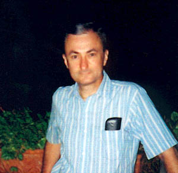
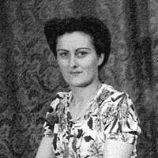
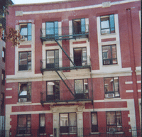
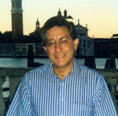
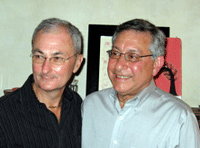

|
 |
|
Robert Boyd Henderson III
Robert Boyd Henderson III is the son of Robert B. Henderson Jr. and Anna Mae Snell. He lives in Brooklyn, New York with his long-time friend, Melvyn Vader. |
|
| Important Facts | |
| June 10, 1941 | Robert Boyd Henderson III was born in Brooklyn, New York. He is the son of Robert B. Henderson Jr. and Anna Mae Snell. Source: Department of Health, City of New York, Certificate of Birth Registration; Number 19593; Place of birth: Jewish Hospital, Borough of Brooklyn. |

|
| August 24, 1941 | Robert B. Henderson was Baptized according to the Rite of the Roman Catholic Church by the Rev. Scipio Taciris. Sponsors were Harold Castell and Agnes Castell. Robert wore the same baptismal gown that his father and grandfather wore, possibly given to the family by Angelina Henderson. Source: Certificate of Baptism, Church of Our Lady of Good Counsel, Inwood, Long Island. | |
| 1943-1952 | Lived with his grandfather at 16 Gates Avenue, Brooklyn, New York. Source: Conversation with Robert B. Henderson III. |
 |
| June 4, 1944 | The picture on the right was taken of Robert's mother, Anna Mae Henderson. | |
| Oct. 4, 1948 | Robert Henderson received first Holy Communion
in the St. Francis Convent Chapel, Roslyn, Long Island, Rev. Alphonse
H Grappone, Chaplain. |
|
| July 28, 1949 | His grandmother, Lillie Henderson died and was buried in the Cypress Hills Cemetery, Brooklyn, New York. |
 |
Robert was confined to St. Francis hospital for about nine months with rheumatic fever and an enlarged heart. He made a full recoverey and this childhood disease has had no effect on his current health. |
||
June
17, 1952 |
Robert Henderson received the Holy Sacrament of Confirmation in the Church of Saint Joseph’s at 4 o'clock, Rev. Edward L. Curran, Pastor. His confirmation name is Edward and he uses the middle initial probably more often than the B for Boyd. Robert selected the name because his best friend in the confirmation class was Edward, and Edward selected Robert as his name. Source: Church of Saint Joseph’s. | |
| Robert attended St Joseph’s elementary school, Brooklyn, New York. | ||
| March 8, 1956 | Robert's grandfather, Robert B. Henderson died in Brooklyn, New York. Source: Green-Wood cemetery Sworn Affidavit #46847. | |
| August 8, 1958 | Robert signed the Green-Wood cemetery Affidavit #46847 as sole surviving heir to the Henderson family cemetery Lot 13244 Section 88. He was living at 346 Hamilton Avenue Brooklyn, New York. Source: Green-Wood cemetery Sworn Affidavit #46847. | |
| 1959 | Robert graduated John Jay High School, Brooklyn and started attending college but had to cut short his education because his mother had developed an aggressive case of breast cancer and he needed to contribute to the finances of the house. |

|
| October 30, 1962 | His mother, Anna Mae Henderson, died at the Long Island College Hospital in Brooklyn, NY. Robert was just 21 and he was left without any close family. They were living at 196 Clinton Avenue, Brooklyn, NY. Source: Certificate of Death, City of New York, Department of Heath. | |
| November 2, 1962 | Anna Mae was buried in the family plot is at the Green-Wood Cemetery at 500 25th St., Brooklyn, New York - Lot 13244, Section 88. Source: The Green-Wood Cemetery records. | |
| 1964 | Robert met on a blind date in 1964 when he returned from three months in Europe. On September 14, 1964 they declared their relationship to friends and soon after Mel moved from his parent’s home into Robert's apartment at 196 Clinton Avenue, Brooklyn, NY. |
 |
| Robert and Mel moved to a classic 6 room apartment at 295 Clinton Avenue, apt.B-1, which was on the second floor. The apartment house was owned by Lefrak Organization. | ||
| Robert rose through the ranks in stationery and office furniture sales. Starting in sales, he became an assistant manager, then store manage and finally head of operations for 16 locations of Goldsmith Bros. Stationers, at that time the world’s largest stationary company. When they went out of business, he returned to a store managerial position at Fuller Office Products and ended his retail career as manager for Kroll Office Products. | ||
| January 11, 1994 | When domestic partners were recognized by New York City, Robert and Mel registered. Source: The City of New York Office of the City Clerk, Certificate of Domestic Partnership; Registration Number: 000001664. | |
| August 1998 | Robert and Mel took a trip to Italy. Some of the places they visited was Florence and Venice. | |
| 2001 | Robert retired from retail sales. | |
| Robert started volunteer work at the Methodist Hospital, in Brooklyn, as a family liaison. | ||
| 2004 | With more than 1000 volunteers, Robert was honored by the hospital for dependability at an awards ceremony. | |
| September 30, 2004 | Mel and Robert applied for a marriage license in Toronto, Ontario, Canada. Source: Certificate of Marriage: Ontario, Canada, Certificate Number P 092965; Ontario Marriage License, Office of the Registrar General, License Number E335917. | |
| October 1, 2004 | The marriage ceremony at city hall was presided over by a robed officiate, Michael Welland, in a special marriage room. Robert and Mel had dinner at a wonderful revolving hotel restaurant overlooking the lake, and the following evening had dinner with Mel’s aunt and children. Source: Place of Marriage: Toronto; Number M589248; Registration Number 2004-05-047363. |
 San Francisco -2008 |
| Today, Robert continues to volunteer two days per week at the Methodist Hospital, in Brooklyn, New York. He is a family liaison, which provides a service between a patient’s family and the patient in the operating room, CCU, ICU or emergency rooms. In addition, Robert trains new volunteers. | ||
| February 2, 2008 | On their way back home from a 14 day cruise, Bob and Mel come to San Francisco to meet his Henderson cousins. They met Greg Henderson and his wife Louise and daughter Leah. Dave Henderson, Scott and Sandra Henderson, and Holly, Bijan, Farah, and Flora Fouladi. |

Last Updated: August 16, 2026